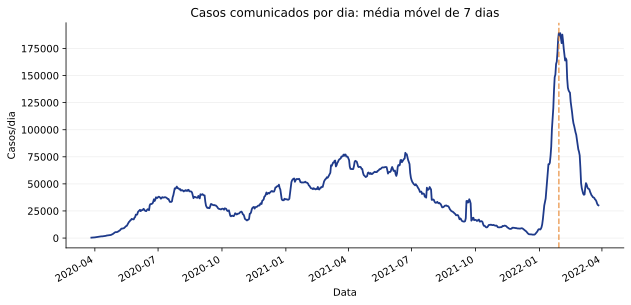
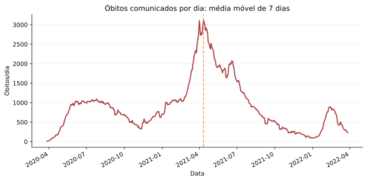
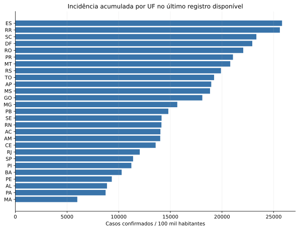

Evolução da COVID-19 no Brasil e qualidade dos registros municipais (2020–2022)
Resumo
Este estudo examina a evolução dos casos e óbitos por COVID-19 no Brasil e a qualidade dos registros municipais disponibilizados pelo Brasil.IO. O arquivo caso_full reúne boletins das secretarias estaduais de saúde e registros preenchidos para datas sem nova publicação. Um pipeline em Python processou 3.853.648 linhas em blocos, separou observações estaduais das municipais, preservou revisões negativas e calculou médias móveis em dias com registros das 27 unidades federativas. No recorte de 2020-02-25 a 2022-03-27, o maior valor da média móvel de casos comunicados foi 189.243 por dia em 2022-01-29; para óbitos, 3.112 por dia em 2021-04-11. Na comparação da última observação estadual, a incidência variou de 5.996 a 25.809 casos por 100 mil habitantes. Entre 3.833.529 linhas municipais, 1.015.288 (26,5%) carregam valores repetidos. Os resultados descrevem datas de publicação e casos confirmados, sujeitos a subnotificação, atraso de boletins e diferenças de testagem. O estudo oferece arquivos abertos, dicionário de dados e código reproduzível conforme princípios FAIR.
Palavras-chave: COVID-19; Brasil.IO; análise exploratória; qualidade de dados; ciência aberta.
1. Introdução
Dados abertos permitem estudar a pandemia em diferentes escalas, mas acumulados estaduais e municipais coexistem na mesma tabela e a cobertura temporal é completada pela repetição de valores anteriores. Uma soma indiferenciada duplicaria totais; zeros em dias repetidos podem refletir a ausência de boletim.
RQ1. Como evoluíram os casos e óbitos comunicados pelas 27 UFs em dias de cobertura completa? RQ2. Como varia a incidência acumulada entre as UFs no último registro disponível? RQ3. Qual a frequência de registros municipais repetidos e de revisões negativas?
2. Metodologia e pipeline de dados
Fonte: Secretarias de Saúde das Unidades Federativas, dados tratados por Álvaro Justen e colaboradores/Brasil.IO. A tabela caso_full contém uma linha por local e data e repete o último valor disponível quando não há boletim novo. A versão utilizada tem SHA-256 dd60678588f09c46e867284887067e0a002a448e846aff3734374bfc19e87dd5, 3.853.648 linhas e período 2020-02-25 a 2022-03-27. Foram excluídas 0 linhas com chave temporal/espacial inválida; revisões negativas foram preservadas e contabilizadas.
for chunk in pd.read_csv(source, compression="gzip", chunksize=150_000):
chunk["date"] = pd.to_datetime(chunk["date"], errors="coerce")
states = chunk.loc[chunk["place_type"].eq("state")]
# As linhas municipais são analisadas separadamente para qualidade.
national = states.groupby("date")["new_confirmed"].sum()O ETL converte datas e números, valida as chaves state/date, não preenche contagens ausentes com zero e preserva revisões. Para totais nacionais, utiliza somente place_type=state e dias com 27 UFs (737 datas). Médias móveis exigem sete dias consecutivos na série filtrada; a incidência usa a estimativa populacional de 2019, com fallback documentado. As comparações entre UFs usam o último registro de cada uma, que pode ter datas distintas; não representam um painel perfeitamente sincronizado.
3. Resultados e discussão
RQ1 · Evolução temporal
O pico da média móvel de novos casos comunicados foi 189.243 por dia em 2022-01-29; o de óbitos foi 3.112 por dia em 2021-04-11. As curvas medem registros publicados, e oscilações refletem tanto a pandemia quanto o calendário de notificações. Não se infere uma causa a partir de coincidência temporal.


RQ2 · Diferenças estaduais
A incidência acumulada no último registro por UF variou de 5.996 por 100 mil habitantes (MA, data 2022-03-27) a 25.809 (ES, data 2022-03-27). A razão entre esses extremos foi 4,3 vezes. Diferenças de testagem, população estimada e atualização de boletins impedem ler a ordenação como medida isolada de transmissão real.

RQ3 · Qualidade do registro
Das 3.833.529 observações municipais, 1.015.288 (26,5%) foram assinaladas como repetidas. A maior proporção estadual foi 47,9% em MG. Foram identificadas 44.842 linhas municipais com revisão negativa em casos ou óbitos (uma linha com ambos conta duas vezes na soma de indicadores). A frequência de repetição varia por local e não indica, por si, erro no dado: documenta a diferença entre data da linha e data do boletim.

4. Conclusão
As respostas às três perguntas mostram ondas de casos e óbitos notificados, variação espacial na incidência acumulada e grande presença de datas preenchidas a partir de boletins anteriores. A separação entre registros municipais e estaduais é decisiva para evitar dupla contagem. O estudo é descritivo: casos dependem de testagem e notificação, óbitos sofrem atrasos e revisões, a população é estimada e a última data difere entre UFs. Trabalhos futuros podem comparar datas de boletim, usar séries por município com critérios de cobertura e relacionar resultados com políticas e dados de testagem.
5. Disponibilidade dos dados e declaração FAIR
Localizável: README com autoria, resumo, palavras-chave, URL da fonte e hash da versão. Acessível: código e artigo estático; dados brutos disponíveis em acesso público no Brasil.IO. Interoperável: CSV/CSV.gz, datas ISO 8601 e data/data_dictionary.md. Reutilizável: código MIT; derivados e texto CC BY-SA 4.0 com atribuição à fonte, dependências fixadas e instruções de reprodução.
git clone https://github.com/marcelobarbosa-dev/projeto-covid19-brasilio
cd projeto-covid19-brasilio
python -m venv .venv
python -m pip install -r requirements.txt
python -m src.etl --download
python -m src.render_articlePara repetir exatamente esta versão, preserve o arquivo bruto cujo SHA-256 aparece na seção 2; o download futuro pode disponibilizar uma versão diferente.
6. Referências
- BRASIL.IO. COVID-19: tabela caso_full. Disponível em: brasil.io/dataset/covid19/caso_full/. Acesso em: 18 nov. 2026.
- JUSTEN, Álvaro et al. covid19-br: documentação e licença dos dados. Disponível em: github.com/turicas/covid19-br. Acesso em: 18 nov. 2026.
- WILKINSON, Mark D. et al. The FAIR Guiding Principles for scientific data management and stewardship. Scientific Data, v. 3, 160018, 2016. DOI: 10.1038/sdata.2016.18.